The art collections · 05
Bistro
Pull up a chair. Expressive color, intimate interiors, and the pleasure of seeing ordinary things anew.
A note about this collection
In this series, we embraced the raw vitality and liberated approach of expressionism, finding
joy in the exploration of art's more visceral and instinctual capacities. Delighting in the
creative process, we allowed our artistic impulses to lead the way, resulting in works that
are unrestrained, exuberant, and teeter on the edge of the tangible world. Each piece is an
ode to the dance of light and shadow, an experiment in how hues interact and textures emerge
to evoke emotion and tell a story without the confines of strict form.
Oh, my such fun!!!
This series holds a special place in our hearts since it was when we became artists.
Stay loose, my friends!
12 of 12 artworks
Select an image for a closer look. Download the original to keep.


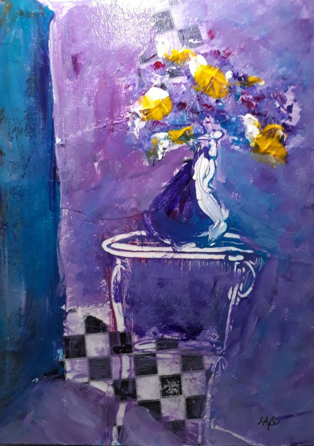


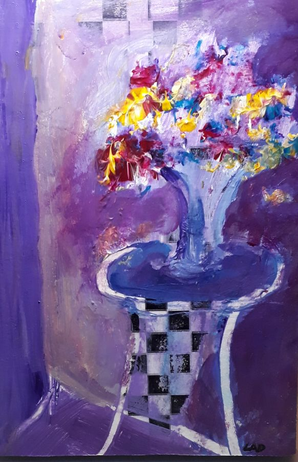


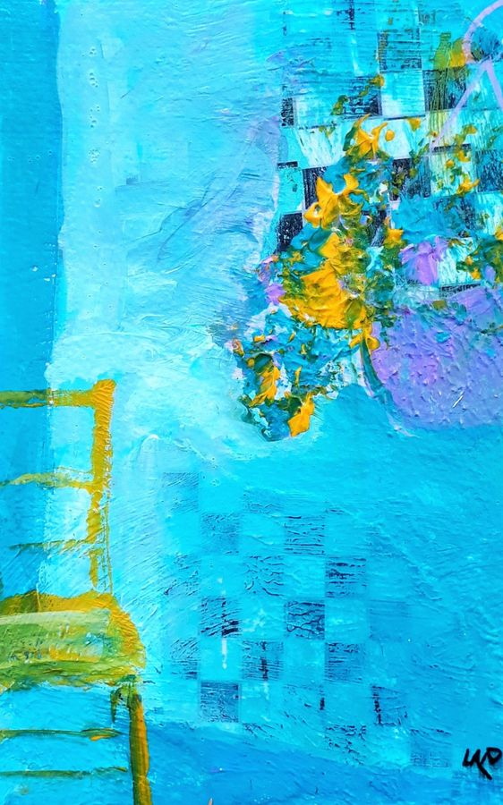


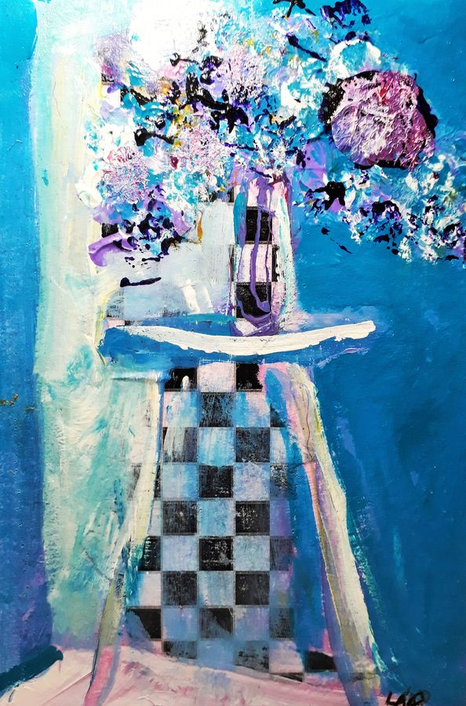


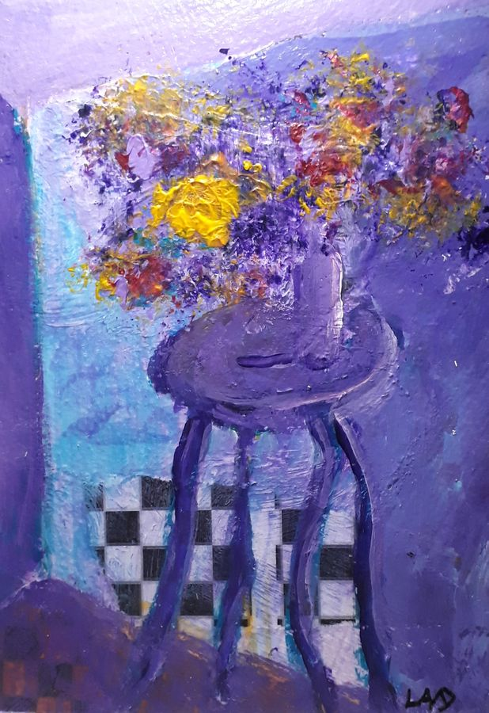


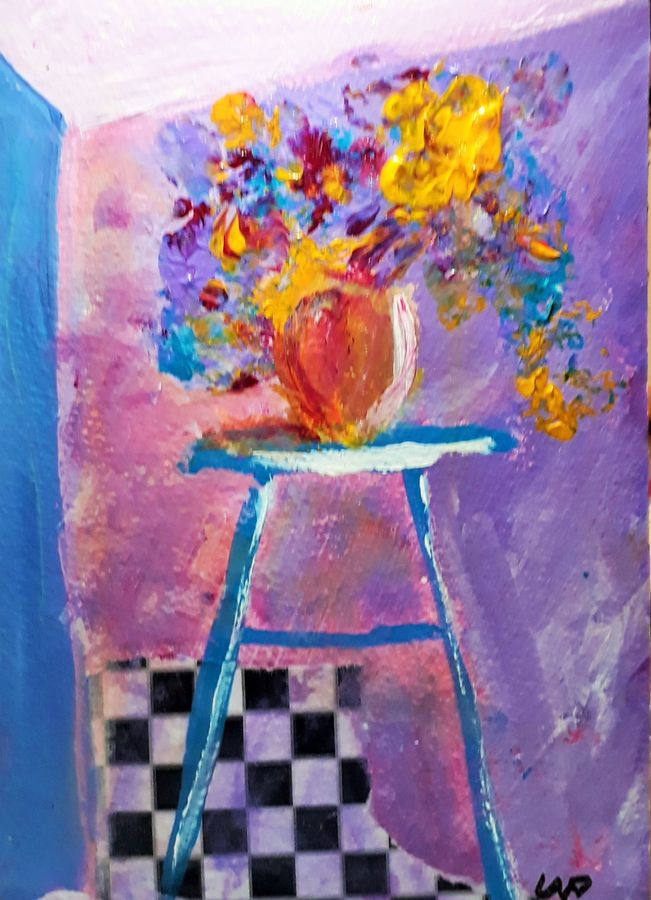


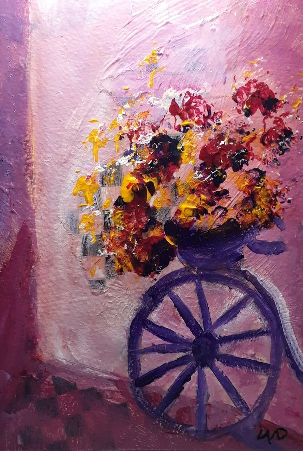


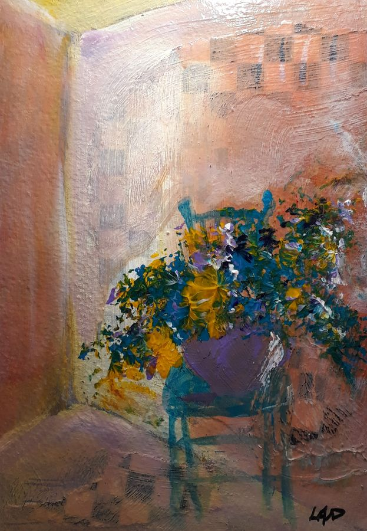


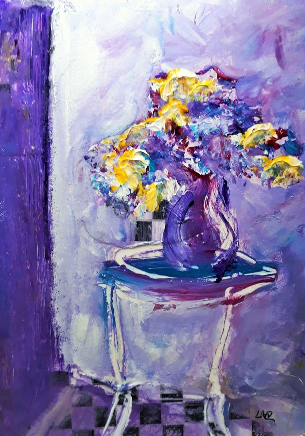


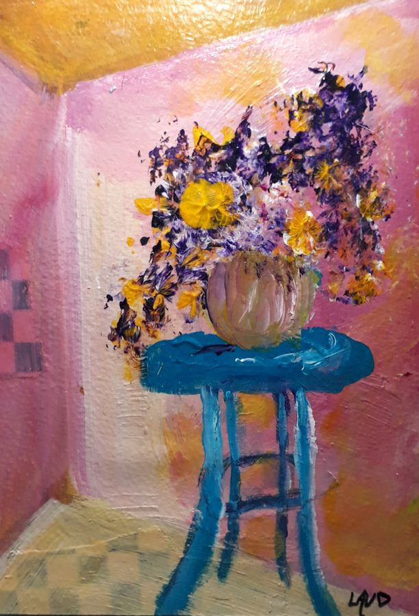


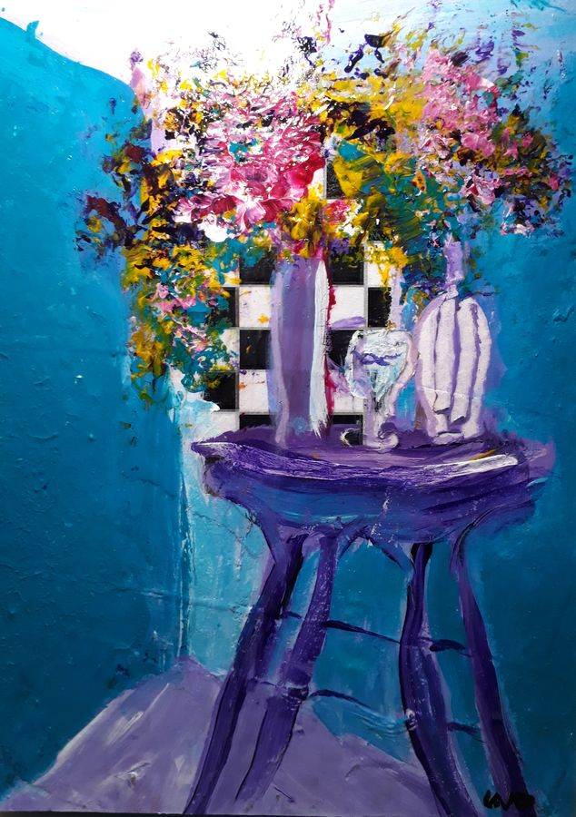

No artworks match that title. Try another search.
These digital images are free for personal, non-commercial use. For other uses or questions, get in touch.
Next collection: Cats →